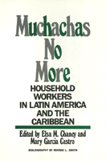

An in-depth look at the sizeable population of women who are domestic workers in Latin America and the Caribbean
An in-depth look at the sizeable population of women who are domestic workers in Latin America and the Caribbean


 An in-depth look at the sizeable population of women who are domestic workers in Latin America and the Caribbean
An in-depth look at the sizeable population of women who are domestic workers in Latin America and the Caribbean

|  |
Muchachas No MoreHousehold Workers in Latin America and the Caribbeanedited by Elsa M. Chaney and Mary Garcia Castropaper EAN: 978-0-87722-835-6 (ISBN: 0-87722-835-3) |
"This excellent compilation of 22 essays, several of which are written by domestic workers themselves, addresses a wide range of issues, including the challenge domestic service poses to feminism and the role of domestic workers in the union movement."
—New Directions For Women
This volume gives the first in-depth look at the sizeable population of women who are domestic workers in Latin America and the Caribbean. Twenty-two essays document how these women have begun to struggle for recognition of their social role in the family unit, for the right to organize, and for the legislation and programs already won by other members of the working class. They have decided to be "muchachas"—"girls"—no more, but rather household workers, women with a profession.
"A number of pieces in the volume make major theoretical contributions to our understanding of the politics which surround household labor, many afford an insightful glimpse into the world view of domestics and several clarify the tensions in the feminist movement over the issue of domestic service. By covering a range of countries and engaging Latin American scholars in the their enterprise, the editors have constructed a volume that will have broad appeal."
—Susan C. Bourque, Professor of Government, Director of the Project on Women and Social Change, Smith College
"This is the most impressive collection of case material to date on this segment, approximately 20 percent of the female work force in Latin America. The 22 essays from academics and activists, North and South, range from issues of history, ideology, and feminism to discrete country and organizational cases and individual testimonies.... The work will have many applications both academic and practical."
—World Development
Introduction
Part I: Domestic Service Yesterday
1. A History of Domestic Service in Spanish America, 1492-1980 – Elizabeth Kuznesof
2. Domestic Service in Jamaica Since 1750 – B.W. Higman
3. Servants and Masters in Rio de Janeiro: Perceptions of House and Street in the 1870s – Sandra Lauderdale Graham
Part II: Domestic Service Today
4. Domestic Workers in Buenos Aires – M�nica Gogna
5. What Is Bought and What Is Sold in Domestic Service? The Case of Bogota – May Garcia Castro
6. Where is Maria Now? Former Domestic Workers in Per� – Margo Lane Smith
7. Domestic Service in the Latin American Fotonovela – Cornelia Butler Flora
8. Domestic Workers in the Caribbean – Patricia Mohammed
9. "Just a Little Respect": West Indian Domestic Workers in New York City – Shellee Colen
Part III: Questions for Feminism
10. Household Workers in the Dominican Republic: A Question for the Feminist Movement – Isis Duarte
11. Politics and Programs of Domestic Workers� Organizations in Mexico – May Goldsmith
12. Feminists and Domestic Workers in Rio de Janeiro – Hildete Pereira de Melo
Part IV: Organization and the State
13. Organizations for Low-Income Women in Montevideo: Reenforcing Marginality? – Suzana Prates
14. Household Workers in Per�: The Difficult Road to Organization – Thea Schellekens and Anja van der Schoot
15. Housework for Pay in Chile: Not Just Another Job – Thelma G�lvez and Rosalba Todaro
16. Domestic Labor and Domestic Service in Colombia – Magdalena Le�n
17. Sharpening the Class Struggle: The Education of Domestic Workers in Cuba – Elena Gil Izquierdo
Part V: In Their Own Words
18. Domestic Workers in Rio de Janeiro: Their Struggle to Organize – Anazir Maria de Oliveira and Odete Maria da Concei�ao with Hildete Pereira de Melo
19. The History of Our Struggle – SINTRASEDOM (National Union of Household Workers, Colombia)
20. The Autobiography of a Fighter (P�ru) – Adelinda D�az de Uriarte
21. History of the Household Workers� Movement in Chile, 1926-1983 – A�da Moreno Valenzuela
22. In Their Own Words – compiled by Mary Garcia Castro
23. Domestic Service in Cross-Cultural Perspective: A Computerized Data Base – Margo L. Smith
Elsa M. Chaney is Chair of Women in International Development Program and Visiting Professor of Anthropology at the University of Iowa, Iowa City.
Mary Garcia Castro is Professor of Sociology at the Federal University of Bahia, Brazil.
Women's Studies
Latin American/Caribbean Studies
Women in the Political Economy, edited by Ronnie J. Steinberg.
No longer active.
Women in the Political Economy, edited by Ronnie J. Steinberg, includes books on women and issues of work, family, social movements, politics, feminism, and empowerment. It emphasizes women's roles in society and the social construction of gender and also explores current policy issues like comparable worth, international development, job training, and parental leave.
© 2015 Temple University. All Rights Reserved. This page: http://www.temple.edu/tempress/titles/523_reg.html.